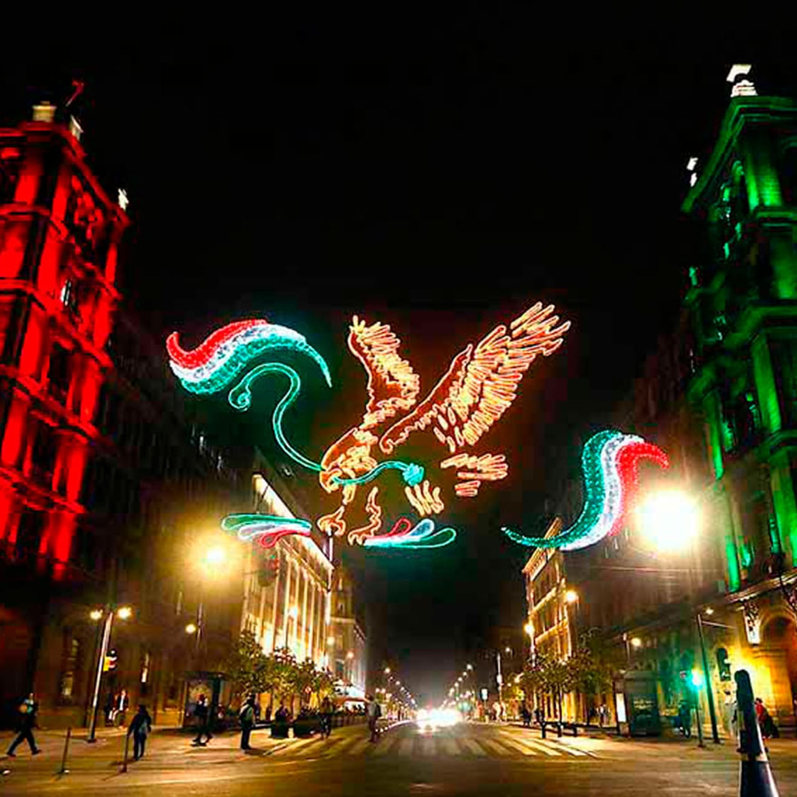
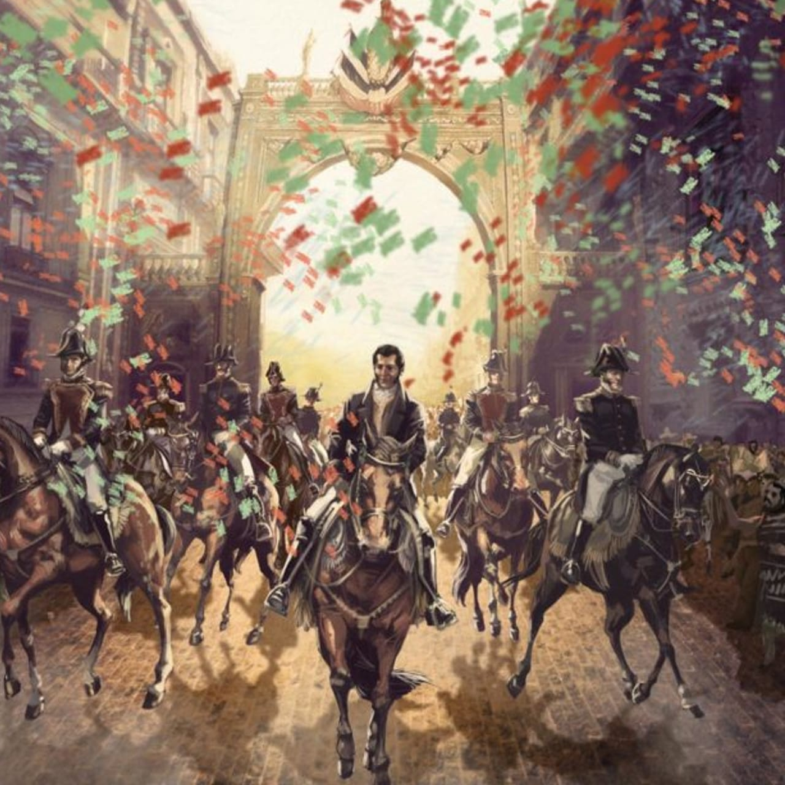

- 4 de septiembre de 1969: Fue inaugurada la Línea 1 del Sistema de Transporte Colectivo Metro, en la Ciudad de México.
- 5 de septiembre: Día Internacional de la Mujer Indígena.
- 8 de septiembre: Día Internacional del Periodista.
- 13 de septiembre de 1847: Aniversario del sacrificio de los Niños Héroes de Chapultepec.
- 15 de septiembre de 1810: Conmemoración del Grito de Independencia.
- 15 de septiembre de 1854: Se interpretó por primera vez el "Himno Nacional Mexicano", escrito por Francisco González Bocanegra y musicalizado por Jaime Nunó.
- 16 de septiembre de 1810: Aniversario del inicio de la Independencia de México.
- 17 de septiembre de 1964: Se inauguró el Museo Nacional de Antropología de México.
- 21 de septiembre: Se conmemora el Día Internacional de la Paz.
- 19 de septiembre de 1985: Con epicentro en los límites de Guerrero y Michoacán, un fuerte sismo de 8.1 en la escala de Richter causó destrucción y muerte en numerosas colonias de la Ciudad de México.
- 22 de septiembre de 1910: Se inauguró solemnemente la Universidad Nacional de México.
